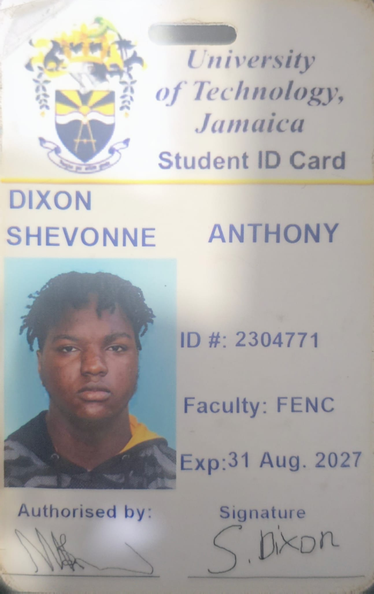

About This Portfolio
Hello! My name is Shevonne Dixon, a final-year computer networking and security student, who majors in cyber security at the University of Technology, Jamaica. This website was built from scratch using vanilla HTML5 and CSS3 to showcase my academic projects, personal traits, reflections, and ambitions.
Contact My Tutor
Click the image of my student identification card below to send an email directly to my tutor:

External Resources
Explore official academic guidelines and materials on the Official UTech Jamaica Portal.